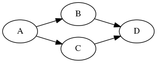

This chapter demonstrates how to create a static task dependency graph. Static tasking captures the static parallel structure of a decomposition and is defined only by the program itself. It has a flat task hierarchy and cannot spawn new tasks from a running dependency graph.
Create a Task Dependency Graph
A task in Taskflow is a callable object for which the operation std::invoke is applicable. It can be either a functor, a lambda expression, a bind expression, or a class objects with operator() overloaded. All tasks are created from tf::Taskflow, the class that manages a task dependency graph. Taskflow provides two methods, tf::Taskflow::placeholder and tf::Taskflow::emplace to create a task.
4:
5:
auto [D, E, F] = taskflow.
emplace(
9: );
Task emplace(C &&callable)
creates a static task
Definition flow_builder.hpp:742
Task placeholder()
creates a placeholder task
Definition flow_builder.hpp:820
class to create a task handle over a node in a taskflow graph
Definition task.hpp:187
class to create a taskflow object
Definition core/taskflow.hpp:73
Debrief:
- Line 1 creates a taskflow object, or a graph
- Line 2 creates a placeholder task without work (i.e., callable)
- Line 3 creates a task from a given callable object and returns a task handle
- Lines 5-9 create three tasks in one call using C++ structured binding coupled with std::tuple
Each time you create a task, the taskflow object creates a node in the task graph and returns a task handle of type tf::Task. A task handle is a lightweight object that wraps up a particular node in a graph and provides a set of methods for you to assign different attributes to the task such as adding dependencies, naming, and assigning a new work.
4:
6: A.
work([] () {
std::cout <<
"reassign A to a new callable\n"; });
8:
12:
const std::string & name() const
queries the name of the task
Definition task.hpp:499
size_t num_successors() const
queries the number of successors of the task
Definition task.hpp:519
Task & work(C &&callable)
assigns a callable
Definition task.hpp:582
Task & precede(Ts &&... tasks)
adds precedence links from this to other tasks
Definition task.hpp:420
size_t num_dependents() const
queries the number of predecessors of the task
Definition task.hpp:504
Debrief:
- Line 1 creates a taskflow object
- Lines 2-3 create two tasks A and B
- Lines 5-6 assign a name and a work to task A, and add a precedence link to task B
- Line 7 adds a dependency link from A to B
- Lines 9-14 dump the task attributes
Taskflow uses general-purpose polymorphic function wrapper, std::function, to store and invoke a callable in a task. You need to follow its contract to create a task. For example, the callable to construct a task must be copyable, and thus the code below won't compile:
std::cout <<
"captured unique pointer is not copyable";
});
Visualize a Task Dependency Graph
You can dump a taskflow to a DOT format and visualize the graph using free online tools such as GraphvizOnline and WebGraphviz.
1: #include <taskflow/taskflow.hpp>
2:
3: int main() {
4:
6:
7:
12:
13:
18:
20: }
void dump(std::ostream &ostream) const
dumps the taskflow to a DOT format through a std::ostream target
Definition core/taskflow.hpp:363
Debrief:
- Line 5 creates a taskflow object
- Lines 8-11 create four tasks
- Lines 14-17 add four task dependencies
- Line 19 dumps the taskflow in the DOT format through standard output

Modify Task Attributes
This example demonstrates how to modify a task's attributes using methods defined in the task handler.
1: #include <taskflow/taskflow.hpp>
2:
3: int main() {
4:
6:
10: };
11:
12: tasks[0].name("This is Task 0");
13: tasks[1].name("This is Task 1");
14: tasks[0].precede(tasks[1]);
15:
16: for(auto task : tasks) {
18: << "num_dependents=" << task.num_dependents() << ", "
19: << "num_successors=" << task.num_successors() << '\n';
20: }
21:
23:
24: tasks[0].work([](){
std::cout <<
"got a new work!\n"; });
25: tasks[1].work([](){
std::cout <<
"got a new work!\n"; });
26:
27: return 0;
28: }
The output of this program looks like the following:
This is Task 0: num_dependents=0, num_successors=1
This is Task 1: num_dependents=1, num_successors=0
digraph Taskflow {
"This is Task 1";
"This is Task 0";
"This is Task 0" -> "This is Task 1";
}
Debrief:
- Line 5 creates a taskflow object
- Lines 7-10 create two placeholder tasks with no works and stores the corresponding task handles in a vector
- Lines 12-13 name the two tasks with human-readable strings
- Line 14 adds a dependency link from the first task to the second task
- Lines 16-20 print out the name of each task, the number of dependents, and the number of successors
- Line 22 dumps the task dependency graph to a GraphViz Online format (dot)
- Lines 24-25 assign a new target to each task
You can change the name and work of a task at anytime before running the graph. The later assignment overwrites the previous values.
Traverse Adjacent Tasks
You can iterate the successor list and the dependent list of a task by using tf::Task::for_each_successor and tf::Task::for_each_dependent, respectively. Each method takes a lambda and applies it to a successor or a dependent being traversed.
my_task.for_each_successor([s=0] (
tf::Task successor)
mutable {
});
my_task.for_each_dependent([d=0] (
tf::Task dependent)
mutable {
});
Attach User Data to a Task
You can attach custom data to a task using tf::Task::data(void*) and access it using tf::Task::data(). Each node in a taskflow is associated with a C-styled data pointer (i.e., void*) you can use to point to user data and access it in the body of a task callable. The following example attaches an integer to a task and accesses that integer through capturing the data in the callable.
int my_data = 5;
int my_date = *
static_cast<int*
>(task.
data());
});
Task & data(void *data)
assigns pointer to user data
Definition task.hpp:614
Notice that you need to create a placeholder task first before assigning it a work callable. Only this way can you capture that task in the lambda and access its attached data in the lambda body.
- Attention
- It is your responsibility to ensure that the attached data stay alive during the execution of its task.
Understand the Lifetime of a Task
A task lives with its graph and belongs to only a graph at a time, and is not destroyed until the graph gets cleaned up. The lifetime of a task refers to the user-given callable object, including captured values. As long as the graph is alive, all the associated tasks exist.
- Attention
- It is your responsibility to keep tasks and graph alive during their execution.
Move a Taskflow
You can construct or assign a taskflow from a moved taskflow. Moving a taskflow to another will result in transferring the underlying graph data structures from one to the other.
assert(taskflow2.num_tasks() == 1 && taskflow1.
num_tasks() == 0);
assert(taskflow3.
num_tasks() == 1 && taskflow2.num_tasks() == 0);
size_t num_tasks() const
queries the number of tasks
Definition core/taskflow.hpp:323
You can only move a taskflow to another while that taskflow is not being run by an executor. Moving a running taskflow can result in undefined behavior. Please see Execute a Taskflow with Transferred Ownership for more details.